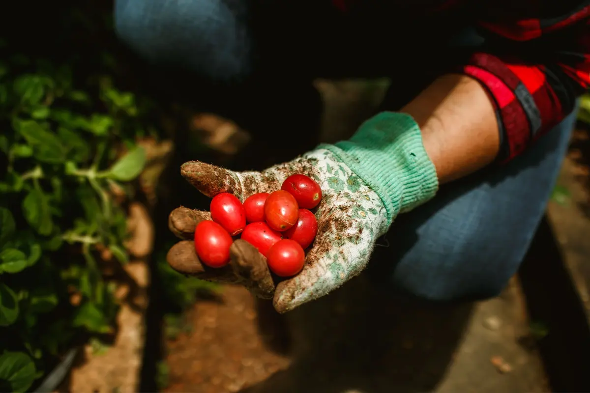

Garden morning
Every other Saturday morning we weed, water and pick in six beds beside a plum tree. Gloves and tea are supplied, and there is always a job for whatever your back is up to.
Ready now
Lettuce
The facts
- When
- Every other Saturday, 9 to 11amEvery second Saturday, with a break over the summer.
- Cost
- FreeGloves and tea are supplied.
- Where
- The gardenSix raised beds and a plum tree, with step-free paths and seats along the way.
- Who runs it
- Ana FifitaAna looks after the volunteers. The garden lead job is open, if you know your way round a bed.
- Who it is for
- AnyoneWhatever your back is feeling like that morning.
- Bring
- Boots and a hatShoes that can get muddy, and a hat.
Six beds and a plum tree
The garden from above, with what is growing in each bed and when it will be ready.
Lettuce
Ready now
Strawberries
Ready next month
Beans
Ready in January
Tomatoes
Ready in February
Pumpkins
Ready in March
Leeks
Ready in May
The plum tree
Ready in January, with the beans

What to expect
We start at nine with tea and a look at what needs doing. Gloves are in the box by the door, and the jobs run from watering and picking to digging and lifting, so there is something for every back.
At eleven we wash our hands and the tea goes round once more.
What’s ready, month by month
- JanuaryBeans and plums
- FebruaryTomatoes
- MarchPumpkins
- AprilApples
- MayLeeks
- JuneSilverbeet
- JulyKale
- AugustBroccoli
- SeptemberSpring onions
- OctoberPeas
- NovemberLettuce
- DecemberStrawberries
The next four Saturdays
Garden morning is every other Saturday. The house is shut from 24 December to 20 January.
9 to 11am
9 to 11am
9 to 11am
9 to 11am
Put your name down
Tell us your first name and what you are up for, and we will have a job and a pair of gloves ready at the next one.
To put your name down, email hello@tidestreet.example or call 04 555 0129.
The garden lead job is on the Help out page, if you would like to lead the morning.
Next morning
This is a demo, so nothing was sent.
Getting in
- Step-free from Tide Street
- Step-free paths to the raised beds
- Seats along the way
- An accessible toilet in the hall
- Four car parks and two mobility parks at the door